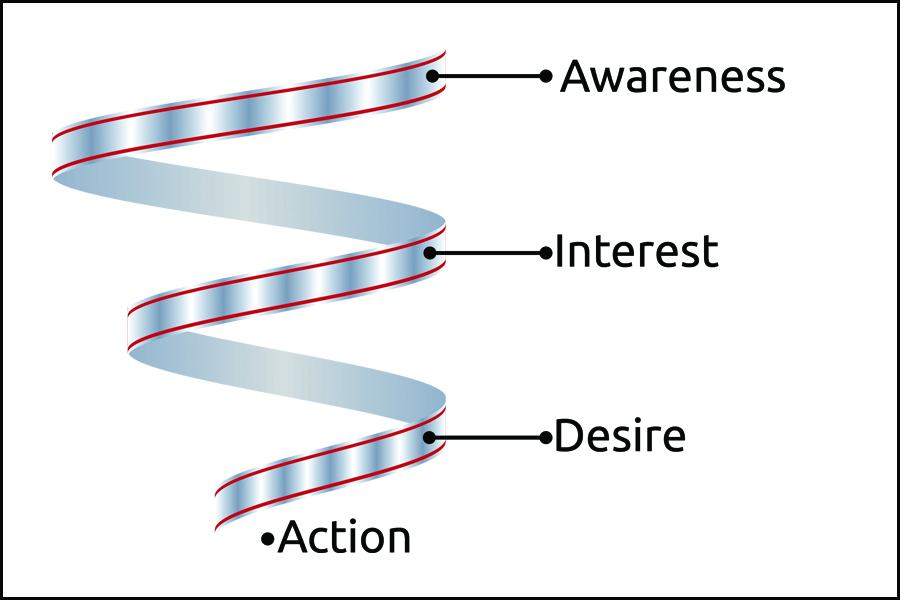
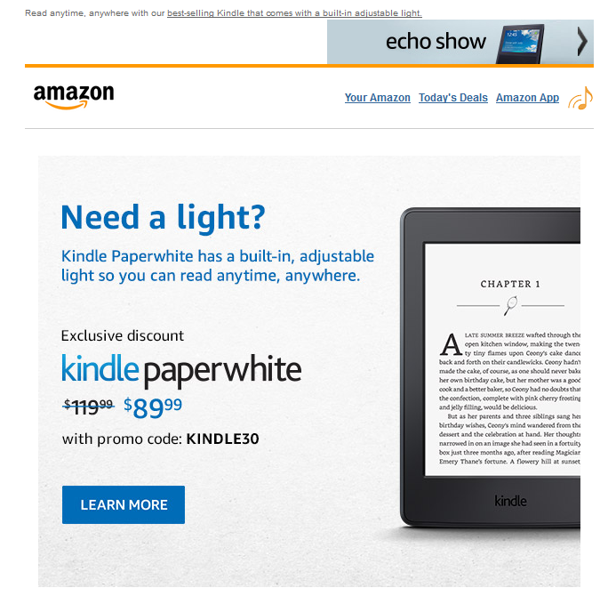
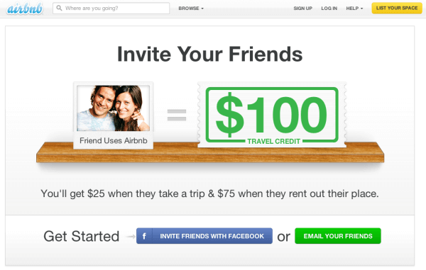

You’ve tried several things, but you just can’t seem get the clicks that you so badly crave.
You’ve tried everything possible: you’ve got the content broken down in relevant areas so that people easily can find what they’re looking for and your offer cannot be resisted by anyone, but still no one is buying.
What is it in your conversion that you are missing?
If we take a look at where customers are coming from as much as 73 per cent are actually not sales ready when they come to your site. Worse still, amongst the ones who meet all the criteria for a successful sale, about half are not ready to buy. In other words, the odds are stacked against you.
On the other hand, if you nurture your leads there’s a high probability that you will be successful. According to a study from marketing firm Marketo, nurtured leads lead to 47 per cent more sales than non-nurtured leads. In other words, the more you groom your relationship with the customer, the more likely he or she is to buy. Or let me say that differently:
When someone knows that you care about the relationship to them, they will make you know it with their wallets.
So if we know that, the next question that comes to mind is:
How do we figure out what a prospective customer wants before he or she is even asking?
This is where the famous sales funnel comes into play.
Then you may ask, what is a sales funnel really?
A sales funnel is a path that just slightly nudges the customer to take a specific path on your site that will ultimately result in a conversion.
Because there are a lot of people who will drop off whilst visiting your site, the final number of converting customers will likely be lower than the overall traffic, hence, the name funnel.
Why, then, are your customers dropping off? That, off course, can be because of a number of reasons. There can, for instance, be technical errors on your site or discrepancies between your landing page and your advertisement. What we do know is that for each drop off the bounce rate increases and the conversion rate decreases.
By building your own sales funnel, you will learn to identify these crucial spots and learn how to improve them.
To visualize this marketers usually draw a funnel with a big opening and a small exit. Here’s one of those visualizations:
Usually a sales funnel is a variation of the old Awareness, Interest, Desire and Action concept that has been around for a long time, but a converting sales funnel is more subtle. People don’t want to be treated as if they have no say – they want to take active decisions when they are visiting your site.
On the other hand, a converting sales funnel is inclusive and stress things like customer behavior, lead nurturing and optimizing each step of the path the customer takes on the site.
A few other questions are also asked at each level of the conversion funnel:
* Why do our customers not act on our offer and what can we do about it?
* Is there a way to make our customers more aware of our brand?
* Can we offer our customers something they can’t resist?
* How can we anticipate and meet our customers’ needs?
A converting sales funnel is a funnel that is more open ended than a conventional sales funnel, it’s more subtle and it considers all the desires that the customer may or may not have. By nature, it also understands that converting does not just end at checkout, but is more profound than that.
So, does this sound difficult? It’s not. The only thing you need is to study each part of your funnel in detail and change it accordingly. Your goal is to nudge your customer down the funnel lining. Let’s have a detailed look inside every part of a converting sales funnel:
Step 1. Pulling customers in
If you would be looking objectively at your traffic, would you consider quantity to be superior to quantity? Sometimes the implicit goal of a website is simply to stuff the far end of the funnel as quickly as possible with as much traffic as possible.
This is the wrong way of looking at a converting sales funnel. If you are just focusing on traffic, you’ll most likely be sorting out people who are not really interested from the ones that are. On the other hand, in a converting sales funnel you could be creating leads, offers and solutions that work for your good.
In a converting sales funnel it’s important to figure out what exactly it is that your target customers want.
Figure out what your competitors are doing. Can I do better than them in any way? Are there needs in my offer that can be changed? Is there a niche that you have overlooked and that you can easily monetize?
You may have several ideas when it comes to this – jot them all down and think specifically about how your offer can help customers get their needs filled.
Here it’s important to recognize that every potential buyer is at different stage in his or her sales funnel and that there may be several actions that you can take that will nudge your customers in the right direction.
Another thing worth mentioning in this context is that it is not about throwing your digital net over your whole web site hoping that that somebody will get caught up in it – it is more subtle than that. You want to figure out the exact motivations of each customer so that you can act on that knowledge in the future.
Examples of things that you may find out:
- How you can make a compelling content marketing case for your offer by adding some real numbers from your business as well as social proof.
- This process may also help you to show how you can deliver value to your customers. In this context it’s important to realize that it has to be something that the customer perceives as value and not what you think is valuable.
Step 2. Encouraging action.
Once your potential customers have landed on your page, you may think that everything you need is a well-designed website with good copywriting on it, but that is not all. You also want to create an emotional rapport with your customers.
How do you do that?
You will not find a universal answer to this question but rather a number of small answers that together will allow you to slightly nudge the customer down your funnel.
Let’s consider an example.
For the sake of argument we are going to look at Amazon. The people working at Amazon go to great length to understand what their customers are actually doing on their site.
They realize that a lot of people are browsing the Amazon site at their lunch breaks. Because the time on the site is limited, often the customer needs a gentle reminder of what he or she has been looking at, at a later time.
The site then remembers what you’ve been looking at and sends you an email with the product a few days later. This is an example of what I would call rapport with the customer.
Another problem is the mismatch between what a customer expects and what he or she receives. Let’s say that the customer clicks on an ad and expects to get a product description but get nothing of the sorts. This is not the way to build rapport with customers.
When you experience this kind of behavior on a website it will most likely leave a foul taste in your mouth. Instead, when you are setting up your website, try to optimize each step so that you can build that rapport. Your wallet will thank you.
There’s one place where you can implement this strategy straight away and that is in the emails that you are sending out to subscribers. According to the marketing automation site Hubspot, nurtured emails lead to between 4 and 10 times more conversion than non-nurtured emails.
In addition, marketers see a 20 per cent increase in their sales when the emails are personalized.
Then there are cases, the B2B-world comes to mind, where people simply are too busy to decide what they want – which means that they don’t do anything. The average business executive receives up to 120 messages a day. That means that you have to stand in order to get their attention.
The way to do that is to slightly nudge your customers into doing what you want. In this example the Amazon is sending out a nudging email to all existing customers of the Kindle device with a message to buy a new one after having used it for a number of years.
The only objection that I have to this is that the text is written in the image and will not be part of the SEO - unless they write the text out separately.
In other words, the secret behind nudging your visitors to doing what you want is to help them help themselves. In the process, you will also increase your brand awareness – something that is very important if you are seller of any sort.
But to give the customer what he or she wants is not the same as sitting down not doing anything, rather it means that you have to create a content plan. More on that in Step 3.
Step 3. The content plan
To craft a content plan does not mean that you will write up whatever comes to your mind that you “think” will work. Instead it’s all about making careful decisions - based on data - in each step of your converting sales funnel. Most likely there are several layers to your converting sales funnel - many of which are overlapping - thus it is very important to know exactly where your customers are in the funnel.
In my experience, the best way to learn is by showing examples. This is why I would like to go through an example together with you. So let’s get started:
Let’s pretend for a moment that you have a business helping people learning yoga online. Then you need to come up with content that meet potential buyers’ needs and do that in every step of your funnel.
For those who are in the Acquire stage of the funnel may want to use local media as much as possible. It may also be that you can get traffic from local social media or from blog posts that you’ve written.
In essence, it’s about opening the eyeballs to your site. You want to make your customers familiar with your site and what you do, and increase people’s awareness of your brand and that you are competent enough to do the job. You do this because it’s the only way for people to give out their credit card numbers. To do this, you need to come up with an answer to the question: “What is it that I’m doing in my business?”, that question and that question alone.
As Sean d’Souza says in his book “The Brain Audit”, it’s all about finding your uniqueness. What unique factor makes you different from your competitors? Your company’s offering becomes much easier far easier to understand for a potential customer.
At this stage, you want to raise awareness of your product and make your visitors familiar with your product. You want your visitors to recognize your brand and convince them of your expertise. The more fine-tuned to the customer’s needs you make your business, the easier this step gets.
To get back to our yoga example, here it could be extremely useful to have a “Start here”-guide, where you go through the basics of yoga. This is a good example of somebody who is thinking about the customer’s needs:

Adrienne from the web site knows that everyone who is coming to her site for the first time is doing so out of curiosity. They may be retired people who want to increase flexibility of their joints, middle-aged men who want to get some exercise or young women who are just curious about the benefits of yoga. It doesn’t matter why you’ve come, at this site you are almost certain to learn the basics. That is because she has an instruction video where she goes through the basics.
How can you do a similar thing for your business?
The first thing that you need to think about is how to make it crystal clear to your visitors how they can benefit from visiting your site. In the example above it is glaringly obvious. Then you need to think about having a ready-made solution to the wants and needs of the visitor. Finally you want to bring the two together by outlining the steps the visitor needs to take in order to get your solution.
That’s it. It’s not more complicated than that.
Step 4. The human factor
So now you’ve laid out the whole funnel and it’s complete with a wide net pulling people in, encouraging your visitors to act and you have been giving thoughts about the content path that you want your visitors to take.
Is there anything missing?
Well, actually, yes. If you really want to make your converting sales funnel attractive you need to make it interesting both to the provider and the receiver.
You’ve probably heard of referral programs and one of the best ones is by Airbnb. Their referral program gets existing customers a $25 bonus when a new user signs up and then they get $75 off when the new customer rents out his or her place.
The program was launched to 2,161 existing customers and in return they got 2,107 new customers which almost mean a new customer for each existing. It’s not often that you will see those statistics.
Here you’re lucky, because setting up a functioning referral system is in many ways similar to setting up converting sales funnel:
1./ Find the market that you are aiming at and that would be most beneficial by bringing in referrals. This does not mean the market that best suits you, but rather the market that would be best served by bringing in referrals.
2./ Let everyone know that you would like to pull a certain percentage of people in. Here it is important to remember that you don’t want to go hunting for people who don’t fit your referral system. That would be counterproductive. The referral needs to be as useful for you as it is for the person referring.
3./ Show your customers how and why they should refer your product. What exactly is in it for the referring person? How do people refer to you? Remember that there are other people who are also asking for referrals so take the time to investigate which way to refer works the best for you. That will help you being noticed.
4./ Turn your referral system rewarding. Enterprises need psychological boosts from time to time in order to stay motivated. That’s why it’s a good idea to think about how the system will be the most beneficial to your customers.
5./ Don’t forget that you are in the trust business and that someone else borrows it to you. The reason why your customers are using your system is because they trust you. In order for a referral system to work you have to use that trust wisely.
6./ Repeat. A working referral system is trying to convince prospects at every level, always. You can look at this as a system. Your prospects may not turn into paying customers for now, but who knows what will happen in the future.
Remember that you are the person who knows your product best. You are uniquely positioned to give suggestions to your prospects for them to get the best value. To do that you need to tune in your ears and listen.
Sometimes your customers will tell you just how anoyed they are, but when they do they actually give you a lot of insight into their inner thoughts of how and why they use the product. This is extremely useful for you who can tap into a direct channel of user experience and allows you to streamline your converting sales funnel.
It's important to remember that you don't have to run exactly as outlined. Instead, if you time this properly you can up-sell and cross-sell to your own liking. To be able to know exactly how your funnel behaves is a hallmark of a strong converting sales funnel.
If you face problems because of the way you price your product, then you just haven’t been able to show them its value. The value of the product may seem obvious to you, but it may not be to others. Make sure that you integrate and align your proposition into your customers’ thinking so that the value also becomes obvious to them.
Once you have put your referral system in place, it’s time to test your converting sales funnel.
Step 5. Testing your funnel
Very often marketers are spending a majority of their time at the top of the funnel. They know everything that there is to know about the acquisition part, but focus very little on the bottom of the funnel.
On top of that, there will likely be many pages that are fighting for the attention of the reader – all of them wanting organic traffic and most likely you will also have a limited budget to test.
So in order to find out where to start testing, first of all you need to work out:
Priority – Are you looking at promoting your worst performers or are you pushing the pages that are performing the best? There may be merits to the former, but I tend to focus on the latter. If you are honest to yourself, there are a number of reasons why your worst-performing pages are doing so badly:
* The quality of the referring traffic is poor.
* A discrepancy between what your site promises and what it delivers to customers.
* Technical problems.
* A sub-par lead-magnet.
You've got little to lose and much to win by promoting those best performing pages.
* Is it easy to implement the converting sales funnel on your site? Do you have all the steps in place? Can this be done without making major changes to your site? If not, don't do it.
* What value do you get from a converting customer? How much they value your brand and sales proposition? How likely are they to convert?
Once you've determined which of your pages would benefit the most from your sales funnel it is time to test it.
Implement Google Analytics
The best way to test your sales funnel is through conversion goals.
This is a system that track your customers from the moment they land on your site until they leave. They may leave the site early (thereby increasing the bounce rate) or ultimately convert.
The easiest way to do this is through Analytics which is a free service from Google. It can easily be set up on your site even if you are using blogging tools like WordPress.
Analytics tracks all the visitors to your site and compile a detailed list of their whereabouts. You get to know how long they've stayed, their source (i.e. where they come from) and if they come from a mobile or desktop device.
The first thing that you need to do is to log in into your Google Analytics account. Once there you can look at whatever page you want.
The second thing that you need is to put a snippet of code on your website. The purpose of this is so that Analytics knows that it is your site that it is looking at.
Then you can create your conversion goals. You can do that at the bottom of the Analytics dashboard.
You can choose from four different conversion goals: Destination, Duration, Pages/Screen per session and Event.
You don't have to create your own goals but rather download some that others have created. You can then change them to your own liking.
If, on the other hand, you want to create your own goals it's easy. Simply click on the New Goal button, call it something and then select the type of goal you want.
Then it's time to fill in the details. For instance, if you consider users registrating on your site to be a goal, then just paste the URL into Analytics.
If you have already set up properties and goals to your Analytics account, you can just click the "Verify this goal" button to see how it would perform using previous data, from a defined time series.
Then simply click the "Create goal" button to finish. Your new goal will now be a part of your Analytics report. That way you can experiment with different factors, such as location and time of day, and see how they affect your conversion.
Step 6. Downstream of the converting sales funnel
So now you've set up your converting sales funnel and you are collecting data on it, but you are still not done.
That is because getting statistical results on a sales funnel is not enough. Instead, the question becomes what you want to do with the data once you've collected it.
What you need to remember is that putting customers through a converting sales funnel is only one aspect of the whole process of selling your products. The conversion rate is not the end of your relationship with the customer. Instead, it may be the beginning of a highly profitable relationship.
Similarly to many of the steps of the converting sales funnel, the conversation you have with the customer afterwards hinges on you paying close attention to every little detail in what the customer says. Even when the sale has been closed, the customer still asks himself/herself if he/she made the right decision.
What they need is some reassurance that they've really made the right decision by buying your product. They also need a slight push to take the next step. Chances are that your customer is feeling dazed and confused and left out if they are just dumped on a thank you-page or a members' area. You need to remember that that is a surefire way of getting angry customers and make them question the steps they have taken so far.
That is why you want to talk to your customer after the sale, and what you want to do is to look at things from the customers' point of view. In particular, you want the following questions to be answered:
* Is it easy for the customer to use your product?
* What about the instructions? Are they clear and easy to follow?
* Do they have someone to contact if they have any questions? Are you available on social media? Here it's important to remember that words spread easily and that human contact always win in this context.
* If your customer is not happy with the product, who do they contact? You need to plan for this as it is a part of doing business. In fact, it can be your secret weapon in that it may reaveal things about your sales process that you didn't know.